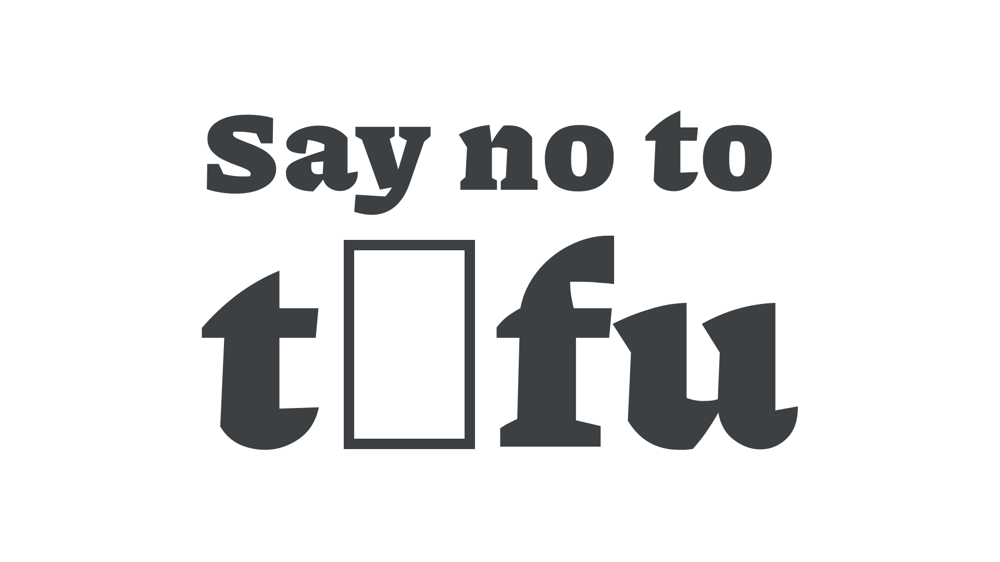

Tofu
By Google Fonts Knowledge contributors · Google Fonts Knowledge.
Original article · Source on GitHub · CC BY-SA 4.0. Text, illustrations and existing credits reproduced from the licensed Knowledge repository. Open Shelf adapted the layout and links; these adaptations are also CC BY-SA 4.0. No endorsement implied.
When a character is not present in a font, and no fallback option is available, the missing character is replaced with a symbol that has come to be known as “tofu” due to its resemblance to a block of tofu.

Software for general use, such as web browsers and Microsoft Word, use font fallback systems to make tofu rare. Professional applications, such as Adobe Creative Cloud suite, inform users when a character is not available in the selected font.
Tofu should be avoided at all costs and is arguably worse than no text appearing at all, because it makes the text inaccessible and the author or brand appear unprofessional. The Noto fonts (“no tofu”) are an attempt to provide fonts for as many writing systems as possible, whether as the intended fonts or as fallback fonts.